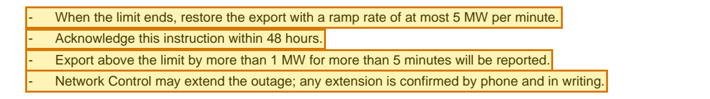

DocWiki: knowledge you can trace to the page
Live sample wiki · open source · fictional corpus
- Documents PDF, Word, Excel, CSV, PowerPoint, e-mail, scans, transcripts
- Compile 13 stages · 15 quality gates
- Immutable release Every claim cites its evidence
- Served to Humans · Foundry agents via MCP · Local coding agents
Zoom: one claim from the sample release
Claim · wiki page
Export above the limit by more than 1 MW for more than 5 minutes will be reported.1


Turns messy documents into a wiki where every sentence cites the page it came from, and disagreements between sources are stated, not hidden.
Source